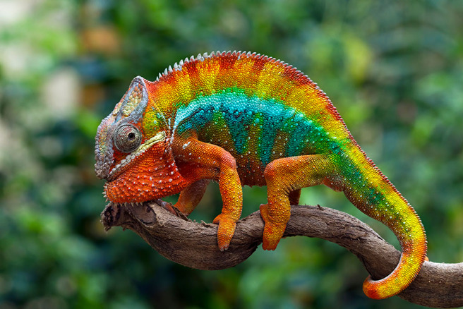
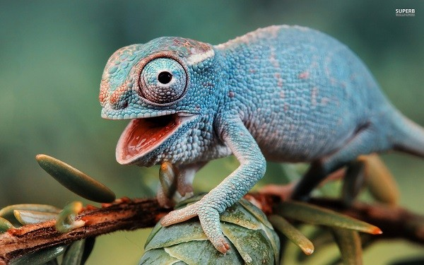
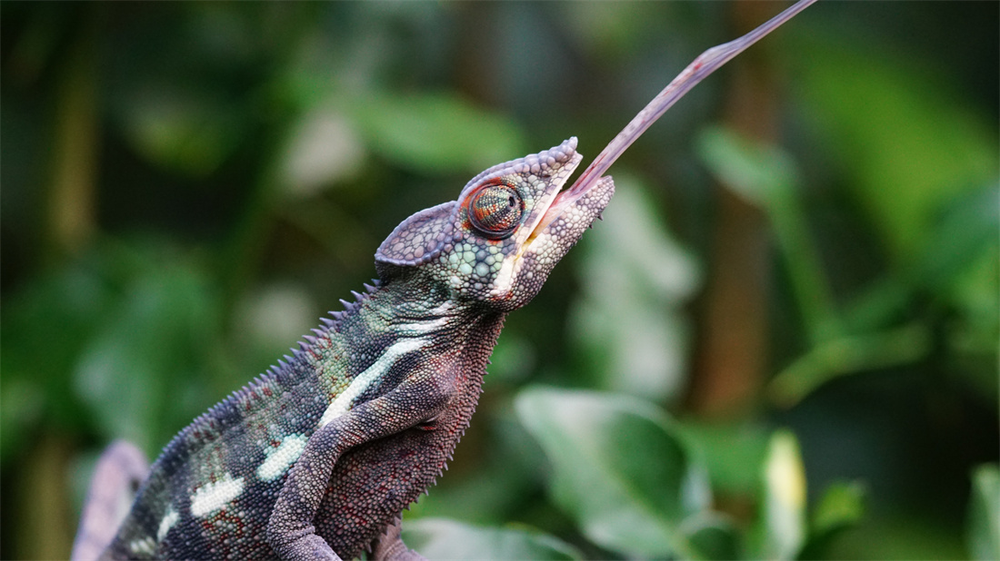

變色龍 Chameleon

變色龍

變色龍

變色龍
Previous
Next
性格：
變色龍的性格可以被描述為相對冷靜和謹慎。
它們通常是獨居的生物，喜歡獨自行動並保持
警覺。變色龍在面對威脅或危險時會表現出謹
慎的態度，傾向於躲避和逃離。它們是頗為沉
默的生物，通常不會主動攻擊，而是以伏擊和
隱蔽為主要防禦策略。此外，變色龍也擁有良
好的適應能力，能夠根據環境的變化做出適當
的反應，包括顏色的變化和行動的調整。
食物：
變色龍的食物主要包括昆蟲、節肢動物和其他
小型無脊椎動物。它們以捕食獵物為生，通常
會利用其快速伸展的舌頭捕捉飛行中的昆蟲。
變色龍的食性具有多樣性，可以根據環境和可
用的食物來做出適應性的調整。一些大型變色
龍甚至會捕食小型脊椎動物，如小鳥或蜥蜴。
此外，變色龍也需要攝取水分，通常會透過吸
水或攝取含水量高的植物來滿足水分需求。
外表特徵＆外觀：
變色龍是一種獨特而迷人的爬行動物，擁有令
人驚嘆的外表特徵和外觀。它們身體修長，有
許多突起和凸起的鱗片，讓它們在樹林和灌木
叢中具有出色的隱蔽能力。變色龍的頭部相對
大型，眼睛能夠獨立移動，提供了廣闊的視野
範圍。它們的四肢也非常靈活，有著特殊的趾
爪結構，能夠輕易地抓住樹枝和攀爬。最引人
注目的是，變色龍的身體能夠改變顏色，以適
應周圍環境和傳達情緒。它們可以快速改變顏
色和花紋，從綠色、褐色到黃色和橙色等多種
色彩。這種變色的能力使得變色龍成為了極其
獨特且美麗的生物。
分佈＆數量：
變色龍廣泛分布於世界各地的熱帶和亞熱帶地
區，包括非洲、亞洲、中東和馬達加斯加等地
。它們在這些地區的森林、草原、沙漠和山區
等不同棲息地中都有所存在。然而，關於變色
龍的精確數量是很難確定的，因為它們常常具
有出色的隱蔽能力，使其在野外很難被觀察和
統計。
生活型態＆習性：
變色龍是一類具有獨特生活型態和習性的爬行
動物。它們擁有出色的變色能力，可以根據周
圍環境的色彩和溫度變化而改變身體的顏色。
這種變色功能有助於它們在獵食、求偶和威嚇
敵人時更好地適應環境。此外，變色龍具有獨
特的會議視覺，可以獨立移動和聚焦的眼睛，
使其能夠盯住獵物或潛在的威脅。它們也擁有
捕食性的舌頭，可以迅速伸出捕捉昆蟲等小型
獵物。變色龍通常是單獨生活的，並且以昆蟲
和其他小型無脊椎動物為食。它們在森林、灌
木叢和草地等各種棲息地中生活，並依賴於隱
蔽的姿態和迅速的運動來逃避捕食者。
壽命：
變色龍的壽命約為2到10年。